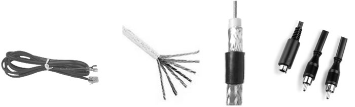

首页 > 编程笔记
多媒体技术介绍（超级详细）
多媒体技术形成于 20 世纪 80 年代，是计算机、广播电视和通信这三大领域相互渗透、相互融合，进而迅速发展的一门新兴技术，是当今信息技术领域发展最快、最活跃的技术之一，它正潜移默化地改变着人们的生活。
多媒体技术使计算机由处理单一文字信息发展到能够综合处理文字、图形、图像、动画、音频和视频等多种媒体，它以丰富的声、文、图信息和方便的交互性，极大地改善了人机界面，改变了人们使用计算机的方式，从而为计算机进入人类生活和生产的各个领域打开了方便之门，给人们的生活和娱乐带来了深刻的变化。
按照国际电信联盟（ITU）的定义，媒体通常分为以下 5 类。
图 1 显示媒体
图 2 存储媒体
多媒体的英文单词是 Multimedia，它由 media 和 multi 两部分组成。从字面上看，多媒体可以理解为多种媒体的综合。
一般来说，多媒体的“多”是指多种媒体表现、多种感官作用、多种设备、多学科交汇、多领域应用；“媒”是指人与客观事物的中介；“体”是指综合、集成一体化。
目前，多媒体大多只利用了人的视觉和听觉，虚拟现实中也只用到了触觉，而味觉、嗅觉尚未集成进来，对于视觉也主要在可见光部分。随着技术的进步，多媒体的含义和范围还将扩展。
多媒体集文字、声音、影像和动画于一体，形成一种更自然、更人性化的人机交互方式，从而将计算机技术从人要适应计算机向计算机要适应人的方向发展。特别是计算机硬件和软件功能的不断提高，客观上为多媒体技术的实现奠定了基础。
在计算机中，西文可直接通过键盘输入，在计算机内部由 ASCII 码表示。ASCII 是美国信息交换标准代码（American Standard Code for Information Interchange）的英文缩写。它是由 7 个二进制位组成的字符编码系统，包括大小写字母、标点符号、控制字符等共 128 个字符。目前，ASCII 码已在计算机领域中得到了广泛的应用。
汉字不能直接通过键盘输入。要使用键盘输入汉字，就必须考虑相应的输入编码方法、汉字在计算机内部的内码表示方法、汉字的输出编码方法。
在计算机内部，汉字编码和西文编码是共存的。为了能够相互区别，国标码将两个字节的最高位都规定为“1”，而ASCII码所用字节的最高位为“0”，然后由软件（或硬件）根据字节最高位来判断。
目前的文字输入方法还有：通过手写输入设备直接向计算机输入文字，通过光学符号识别（OCR）技术自动识别文字进行输入，通过语音进行输入等。
Word、WPS 是最常用的文字编辑处理软件。在文本文件中，如果只有文本信息，没有其他任何格式的信息，则称该文本文件为非格式文本或纯文本文件。
MIDI 是 20 世纪 80 年代提出来的，是数字音乐的国际标准。它定义了计算机音乐程序、合成器及其他电子设备交换信息和电子信号的方式，所以可以解决不同电子乐器之间不兼容的问题。利用 MIDI 文件演奏音乐所需的存储量最少。
矢量图形是以一组指令集合来表示的，这些指令用来描述构成一幅图所包含的直线、矩形、圆、圆弧、曲线等的形状、位置、颜色等各种属性和参数。在显示图形时，需要相应的软件读取和解释这些指令，将其转换为屏幕上所显示的形状和颜色。
绝大多数计算机辅助设计软件和三维动画软件都使用矢量图形作为基本图形存储格式。图形技术的关键是制作和再现，图形只保存算法和特征点，占用的存储空间比较小，打印输出和放大时图形的质量较好。
静止图像是一个矩阵点阵图，矩阵中的各项数字用来描述构成图像的各个像素点的亮度与颜色等信息。
位图图像适合表现细致、层次和色彩丰富以及包含大量细节的图像。当放大位图时，由于构成图像的像素个数并没有增加，只能是像素本身进行放大，所以可以看见构成整个图像的无数个方块，从而使线条和形状显得参差不齐。
在位图中影响作品质量的关键因素是颜色的数目和图像的分辨率。例如，彩色图像，R（红）、G（绿）、B（蓝）三基色每色量化 8 bit，则称颜色量化位数为 24 bit 真彩色图像，在一幅图中可以同时拥有 16 万种颜色，这么多的颜色可以较完美地表现出自然界中的实景。
图像文件在计算机中的表示格式有多种，如 BMP、PCX、TIF、TGA、GIF、IPG 等，一般数据量比较大。对于图像，主要考虑分辨率（屏幕分辨率、图像分辨率和像素分辨率）、图像灰度以及图像文件的大小等因素。
随着计算机技术的进步，图形和图像之间的界限已越来越小，这主要是由于计算机处理能力提高了。无论是图形或图像，由输入设备扫描进入计算机时，都可以看作是一个矩阵点阵图，但经过计算机自动识别或跟踪后，点阵图又可转变为矢量图。因此，图形和图像的自动识别，都是借助图形生成技术来完成的，而一些有真实感的可视化图形，又可采用图像信息的描述方法来识别。图形和图像的结合，更适合媒体表现的需要。
当序列中每帧图像都是由人工或计算机产生的图像时，常称为动画；当序列中每帧图像都是通过实时摄取自然景象或活动对象时，常称为影像视频，或简称为视频。动态图像演示常常与声音媒体配合进行，二者的共同基础是时间连续性。
动画是通过把人物的表情、动作、变化等分解后画成许多动作瞬间的画幅，再用摄影机连续拍摄成一系列画面，给视觉造成连续变化的图画。
动画的基本原理与电影、电视一样，都是视觉暂留原理。即人的眼睛看到一幅画或一个物体后，在0.34s内不会消失。利用这一原理，在一幅画还没有消失前播放下一幅画，就会给人造成一种流畅的视觉变化效果。
动画可以分为二维动画和三维动画两大类：
国际上，彩色电视主要有3种体制，即正交平衡调幅制（NTSC）、逐行倒相制（PAL）和顺序传送彩色与存储制（SECAM），当计算机对视频信号进行数字化处理时，就必须在规定的时间内（如 1/25s 或 1/30s）完成量化、压缩和存储等多项工作。
计算机动画和视频的主要区别类似于图形与图像的区别，即帧画面的产生方式有所不同。计算机动画是用计算机表现真实对象与模拟对象随时间变化的行为和动作，是利用计算机图形技术绘制出的连续画面，是计算机图形学的一个重要的分支；而数字视频主要是指模拟信号源（如电视、电影等）经过数字化后的图像和同步声音的混合体。
多媒体技术的发展经历了起步阶段、标准化阶段、应用发展阶段。
多媒体技术极大地改变了人们获取信息的传统方法，符合人们在信息时代的阅读方式。与报纸、杂志、无线电和电视等大众信息传媒相比，多媒体具有以下4个特点。
总之，多媒体技术是一种基于计算机技术的综合技术，它包括信号处理技术、音频和视频技术、计算机硬件和软件技术、通信技术、图像处理技术、人工智能等，是处于发展过程中的一门跨学科的综合性高新技术。
自媒体有别于由专业媒体机构主导的信息传播，它是由普通大众主导的信息传播活动，由传统的“点到面”传播，转化为“点到点”的对等传播概念。
融媒体通常指媒介信息传播采用文字、声音、影像、动画、网页等多种媒体表现手段（多媒体），利用广播、电视、音像、电影、图书、报纸、杂志、网站等不同媒介形态（业务融合），通过融合的广电网络、电信网络以及互联网进行传播，最终实现用户以电视、计算机、手机等多种终端均可完成信息的融合接收（三屏合一），实现任何人、任何时间、任何地点、以任何终端获得任何想要的信息（5W）。
融媒体是充分利用媒介载体，将广播、电视、报纸等既有共同点又存在互补性的不同媒体，在人力、内容、宣传等方面进行全面整合，实现“资源通融、内容兼容、宣传互融、利益共融”的媒体形式，是人类掌握的信息流手段的最大化的集成者。
因此，融媒体是信息、通信及网络技术条件下各种媒介实现深度融合的结果，是媒介形态大变革中最为崭新的传播形态。融媒体通过提供多种方式和多种层次的各种传播形态来满足受众的细分需求，使得受众获得更及时、更多角度、更多听觉和视觉满足的媒体体验。
5G 时代将是视频内容大时代，是万物互联时代。随着 5G 时代的到来，普通文字版的短信已经不能满足用户的通信需求，富媒体信息通信呼之欲出。富媒体信息简称为富信，有人也称它为 5G 消息，其支持快速传递、图片、音视频等多媒体信息到手机，相比传统信息，其具有图文并茂、支持互动、赋能场景等优势。它可以基于运营商、手机厂商、社交网络以及操作系统等多渠道传输，是企业与客户的新型沟通方式。
简单地说，富信=短信签名+文本内容+详细内容链接+图片内容+视频内容+交互。
富信兼具传统短信的优势，更适应5G时代的需求。目前即时通信服务产品形态包含传统短信、社交 APP 以及富信，对比这 3 种产品形态，富信兼具传统短信的实名登记优势，同时更适应 5G 时代的多媒体需求，有望成为 5G 时代 B2C 通信的主要方式，将与 5G 共同开启产业互联时代的新蓝海。
富信与传统短信相比。传统短信仅包含文字内容或者短链接，内容单一，而富信包含图片、文本、视频等多媒体信息，内容更丰富；传统短信是“到达即结束”，发送信息到达手机用户即完成本次传统短信的商业行为，而富信是“到达即开始”，发送信息到达手机用户侧，将提供链接或者互动，形成富信发送方与手机用户方之间的新的商业行为。相同的地方：同样具备手机号码实名登记功能，具备法律效力。
富信与社交 APP 即时通信工具相比。社交 APP 需要相互认证并添加联系才能实现消息发送，而富信是通过认知接收方的手机号码进行消息发送，将具备更高的信息到达度；社交 APP 发送消息并不需要实名认证，而富信的消息发送以手机号码为目标，具有实名登记功能。
5G 催生内容富媒体化需求。5G 网络是富媒体通信生产力，而富媒体通信则是代表新的生产关系。5G 带来的大带宽、低延迟以及大容量特性让文本短信升级为集手机通讯录、图片、声音、视频、IM、公众号为一体的富媒体信息，而富媒体信息也将成为新的流量入口。
多媒体技术使计算机由处理单一文字信息发展到能够综合处理文字、图形、图像、动画、音频和视频等多种媒体，它以丰富的声、文、图信息和方便的交互性，极大地改善了人机界面，改变了人们使用计算机的方式，从而为计算机进入人类生活和生产的各个领域打开了方便之门，给人们的生活和娱乐带来了深刻的变化。
多媒体的定义
媒体一词源于英文 Medium，是指人们用于传播和表示各种信息的手段。我们通常所说的“媒体”（Media）包括两个方面的含义：一方面是指信息的物理载体（即存储和传递信息的实体），如书本、挂图、磁盘、光盘、磁带以及相关的播放设备等；另一方面是指信息的表现形式（或者说传播形式），如文字、声音、图像、动画等。按照国际电信联盟（ITU）的定义，媒体通常分为以下 5 类。
1) 感觉媒体
感觉媒体是指直接作用于人的感觉器官，从而使人产生直接感觉的媒体。感觉媒体包括人类的语言、音乐和自然界的各种声音、活动图像、图形、曲线、动画及文本等。2) 表示媒体
表示媒体是指为了传送感觉媒体而人为研究出来的媒体。表示媒体包括各种语音编码、音乐编码、图像编码、文本编码、活动图像编码和静止图像编码等。3) 显示媒体
显示媒体是指用于通信中电信号和感觉媒体之间转换所用的媒体。显示媒体有两种：输入显示媒体（包括键盘、鼠标、摄像机、扫描仪、光笔和话筒等）和输出显示媒体（包括显示器、扬声器和打印机等），如图 1 所示。图 1 显示媒体
4) 存储媒体
存储媒体是指用于存储表示媒体的物理介质。存储媒体有硬盘、U 盘、光盘、磁盘阵列等，如图 2 所示。图 2 存储媒体
5) 传输媒体
传输媒体是指用于传输表示媒体的物理介质。传输媒体的种类很多，如电话线、双绞线、同轴电缆、光纤、无线电和红外线等，如图 3 所示。

图 3 传输媒体
图 3 传输媒体
多媒体的英文单词是 Multimedia，它由 media 和 multi 两部分组成。从字面上看，多媒体可以理解为多种媒体的综合。
一般来说，多媒体的“多”是指多种媒体表现、多种感官作用、多种设备、多学科交汇、多领域应用；“媒”是指人与客观事物的中介；“体”是指综合、集成一体化。
目前，多媒体大多只利用了人的视觉和听觉，虚拟现实中也只用到了触觉，而味觉、嗅觉尚未集成进来，对于视觉也主要在可见光部分。随着技术的进步，多媒体的含义和范围还将扩展。
多媒体集文字、声音、影像和动画于一体，形成一种更自然、更人性化的人机交互方式，从而将计算机技术从人要适应计算机向计算机要适应人的方向发展。特别是计算机硬件和软件功能的不断提高，客观上为多媒体技术的实现奠定了基础。
多媒体元素
多媒体常用的媒体元素如下。1、文字
文本是计算机文字处理程序的基础，由字符型数据（包括数字、字母、符号）和汉字组成，它们在计算机中都用二进制编码的形式表示。在计算机中，西文可直接通过键盘输入，在计算机内部由 ASCII 码表示。ASCII 是美国信息交换标准代码（American Standard Code for Information Interchange）的英文缩写。它是由 7 个二进制位组成的字符编码系统，包括大小写字母、标点符号、控制字符等共 128 个字符。目前，ASCII 码已在计算机领域中得到了广泛的应用。
汉字不能直接通过键盘输入。要使用键盘输入汉字，就必须考虑相应的输入编码方法、汉字在计算机内部的内码表示方法、汉字的输出编码方法。
1) 汉字输入编码
当前采用的编码方式主要有数字编码、音码、形码及音形码4类，其中，音码和形码最常用，如各类拼音输入法、五笔字型输入法等。2) 汉字内码
汉字内码是用于汉字信息的存储、交换、检索等操作的机内代码。当前的汉字编码有 2B、3B 甚至 4B 的，其中，国家标准 GB 2312—1980（信息交换用汉字编码字符集）中规定汉字及符号以 2 个字节表示，用两个 7 位二进制数编码表示一个汉字。在计算机内部，汉字编码和西文编码是共存的。为了能够相互区别，国标码将两个字节的最高位都规定为“1”，而ASCII码所用字节的最高位为“0”，然后由软件（或硬件）根据字节最高位来判断。
3) 汉字字形码
字形码是用点阵表示汉字的代码。简易汉字为 16×16 点阵，大多数汉字为 24×24 点阵、32×32 点阵，甚至更高。16×16 点阵的每个汉字要占用 32B，而 32×32 点阵的每个汉字要占用 128B。目前的文字输入方法还有：通过手写输入设备直接向计算机输入文字，通过光学符号识别（OCR）技术自动识别文字进行输入，通过语音进行输入等。
Word、WPS 是最常用的文字编辑处理软件。在文本文件中，如果只有文本信息，没有其他任何格式的信息，则称该文本文件为非格式文本或纯文本文件。
2、数字音频
“音频”也称“音频信号”或“声音”，其频率范围在 20Hz~30kHz 之间，主要包括波形声音、语音和音乐 3 种类型。波形声音是声音的最一般形态，包含了所有的声音形式；语音是一种包含有丰富语言内涵的波形声音，它的文件格式是 WAV 或 VOC 文件；音乐是符号化了的声音，乐谱可转化为符号媒体形式，对应的文件格式是 MID 或 CMF 文件。对音频信号的处理，主要是编辑声音和声音不同存储格式之间的转换。1) 数字音频
数字音频是指用一系列数字表示的音频信号，是对声音波形的表示。波形描述了声音在空气中的振动，波形最高点（或最低点）与基线的距离为振幅；波形中两个连续的波峰间的距离称为周期；每秒钟内出现的周期数称为波形的频率。在捕捉声音时，以一定的时间间隔对波形进行采样，产生一系列的振幅值，将这一系列的振幅值用数字表示，就产生了波形文件。2) MIDI
MIDI 是乐器数字接口（Musical Instrument Digital Interface）的英文缩写。MIDI 信息实际上是一段音乐的描述，当 MIDI 信息通过一个音乐或声音合成器进行播放时，该合成器对一系列的 MIDI 信息进行解释，然后产生相应的一段音乐或声音。MIDI 是 20 世纪 80 年代提出来的，是数字音乐的国际标准。它定义了计算机音乐程序、合成器及其他电子设备交换信息和电子信号的方式，所以可以解决不同电子乐器之间不兼容的问题。利用 MIDI 文件演奏音乐所需的存储量最少。
3、图形与图像
1) 图形
图形是由点、线、面以及三维空间所表示的几何图。在几何学中，几何元素通常用矢量表示，所以图形也称为矢量图形。矢量图形是以一组指令集合来表示的，这些指令用来描述构成一幅图所包含的直线、矩形、圆、圆弧、曲线等的形状、位置、颜色等各种属性和参数。在显示图形时，需要相应的软件读取和解释这些指令，将其转换为屏幕上所显示的形状和颜色。
绝大多数计算机辅助设计软件和三维动画软件都使用矢量图形作为基本图形存储格式。图形技术的关键是制作和再现，图形只保存算法和特征点，占用的存储空间比较小，打印输出和放大时图形的质量较好。
2) 图像
图像是指由输入设备录入的自然景观，或以数字化形式存储的任意画面。静止图像是一个矩阵点阵图，矩阵中的各项数字用来描述构成图像的各个像素点的亮度与颜色等信息。
位图图像适合表现细致、层次和色彩丰富以及包含大量细节的图像。当放大位图时，由于构成图像的像素个数并没有增加，只能是像素本身进行放大，所以可以看见构成整个图像的无数个方块，从而使线条和形状显得参差不齐。
在位图中影响作品质量的关键因素是颜色的数目和图像的分辨率。例如，彩色图像，R（红）、G（绿）、B（蓝）三基色每色量化 8 bit，则称颜色量化位数为 24 bit 真彩色图像，在一幅图中可以同时拥有 16 万种颜色，这么多的颜色可以较完美地表现出自然界中的实景。
图像文件在计算机中的表示格式有多种，如 BMP、PCX、TIF、TGA、GIF、IPG 等，一般数据量比较大。对于图像，主要考虑分辨率（屏幕分辨率、图像分辨率和像素分辨率）、图像灰度以及图像文件的大小等因素。
随着计算机技术的进步，图形和图像之间的界限已越来越小，这主要是由于计算机处理能力提高了。无论是图形或图像，由输入设备扫描进入计算机时，都可以看作是一个矩阵点阵图，但经过计算机自动识别或跟踪后，点阵图又可转变为矢量图。因此，图形和图像的自动识别，都是借助图形生成技术来完成的，而一些有真实感的可视化图形，又可采用图像信息的描述方法来识别。图形和图像的结合，更适合媒体表现的需要。
4、动画和数字视频
动态图像包括动画和视频信息，是连续渐变的静态图像或图形序列沿时间轴顺次更换显示，从而构成运动视感的媒体。当序列中每帧图像都是由人工或计算机产生的图像时，常称为动画；当序列中每帧图像都是通过实时摄取自然景象或活动对象时，常称为影像视频，或简称为视频。动态图像演示常常与声音媒体配合进行，二者的共同基础是时间连续性。
1) 动画
动画是指采用逐帧拍摄对象并连续播放而形成运动的影像技术。动画是通过把人物的表情、动作、变化等分解后画成许多动作瞬间的画幅，再用摄影机连续拍摄成一系列画面，给视觉造成连续变化的图画。
动画的基本原理与电影、电视一样，都是视觉暂留原理。即人的眼睛看到一幅画或一个物体后，在0.34s内不会消失。利用这一原理，在一幅画还没有消失前播放下一幅画，就会给人造成一种流畅的视觉变化效果。
动画可以分为二维动画和三维动画两大类：
- 二维画面是平面上的画面，通过纸张、照片或计算机屏幕显示，无论画面的立体感有多强，终究只是在二维空间上模拟真实的三维空间效果；
- 三维动画又称 3D 动画，是利用计算机软件或是视频等工具将三维物体运动的原理、过程等清晰简洁地展现在人们眼前，常用工具有 3ds Max、MAYA 等。
2) 数字视频
数字视频具有时序性与丰富的信息内涵，常用于交代事物的发展过程。数字视频类似于大家熟悉的电影和电视，有声有色，在多媒体中充当起重要的角色。视频图像信号的录入、传输和播放等许多方面继承于电视技术。国际上，彩色电视主要有3种体制，即正交平衡调幅制（NTSC）、逐行倒相制（PAL）和顺序传送彩色与存储制（SECAM），当计算机对视频信号进行数字化处理时，就必须在规定的时间内（如 1/25s 或 1/30s）完成量化、压缩和存储等多项工作。
计算机动画和视频的主要区别类似于图形与图像的区别，即帧画面的产生方式有所不同。计算机动画是用计算机表现真实对象与模拟对象随时间变化的行为和动作，是利用计算机图形技术绘制出的连续画面，是计算机图形学的一个重要的分支；而数字视频主要是指模拟信号源（如电视、电影等）经过数字化后的图像和同步声音的混合体。
多媒体技术及其特点
所谓多媒体技术，就是采用计算机技术把文字、声音、图形、图像和动画等综合一体化，使之建立起逻辑连接，并能对它们获取、压缩编码、编辑、处理、存储和展示。多媒体技术的发展经历了起步阶段、标准化阶段、应用发展阶段。
- 起步阶段：起源于 20 世纪 80 年代初期，以第四代计算机的诞生、声卡和鼠标的问世、图形窗口界面的出现为主要特征。
- 标准化阶段：从 20 世纪 90 年代开始，以静态图像压缩、运动图像压缩、音频压缩、CD—ROM 和 DVD 存储编码标准的产生为主要特征。
- 应用发展阶段：从 20 世纪 90 年代中后期开始，以多媒体通信、多媒体集成工具、超媒体的使用为其主要特征。
多媒体技术极大地改变了人们获取信息的传统方法，符合人们在信息时代的阅读方式。与报纸、杂志、无线电和电视等大众信息传媒相比，多媒体具有以下4个特点。
1) 集成性
传统的信息处理设备具有封闭、独立和不完整性，而多媒体技术综合利用了多种设备（如计算机、照相机、录像机、扫描仪、光盘刻录机、网络等）对各种信息进行表现和集成。2) 多维性
传统的信息传播媒体只能传播文字、声音、图像等一种或两种媒体信息，给人的感官刺激是单一的，而多媒体综合利用了视频处理技术、音频处理技术、图形处理技术、图像处理技术、网络通信技术，扩大了人类处理信息的自由度，给人的感官刺激是多维的。3) 交互性
人们在与传统的信息传播媒体打交道时总是处于被动状态，而多媒体是以计算机为中心的，它具有很强的交互性。借助于键盘、鼠标、声音、触摸屏等，人们可以通过计算机程序控制各种媒体的播放。因此，在信息处理和应用过程中，人具有很大的主动性，这样可以增强人对信息的理解力和注意力，延长信息在人脑中的保留时间，并从根本上改变以往人类所处的被动状态。4) 数字化
与传统的信息传播媒体相比，多媒体系统对各种媒体信息的处理、存储过程是全数字化的。数字技术的优越性使多媒体系统可以高质量地实现图像与声音的再现、编辑和特技处理，使真实的图像和声音、三维动画以及特技处理实现完美的结合。总之，多媒体技术是一种基于计算机技术的综合技术，它包括信号处理技术、音频和视频技术、计算机硬件和软件技术、通信技术、图像处理技术、人工智能等，是处于发展过程中的一门跨学科的综合性高新技术。
新媒体、自媒体与融媒体
近年来，随着移动通信、虚拟现实、人工智能、云计算等新一代信息技术的快速发展，人们与各种媒体的交互方式也发生了改变，一些新型的媒体融合模式不断涌现，如数字杂志、数字报纸、数字广播、手机短信、移动电视、网络、桌面视窗、数字电视、数字电影、触摸媒体等。新媒体是一个宽泛的概念，是指利用数字技术和网络技术，通过互联网、宽带局域网、无线通信网、卫星等渠道，以及计算机、手机、数字电视机等终端，带局域网、无线通信网、卫星等渠道，以及计算机、手机、数字电视机等终端，向用户提供信息和娱乐服务的传播形态。因此，严格地说，新媒体应该称为数字化新媒体。相对于报刊、户外媒体、广播、电视四大传统意义上的媒体，新媒体被形象地称为“第五媒体”。
自媒体有别于由专业媒体机构主导的信息传播，它是由普通大众主导的信息传播活动，由传统的“点到面”传播，转化为“点到点”的对等传播概念。
融媒体通常指媒介信息传播采用文字、声音、影像、动画、网页等多种媒体表现手段（多媒体），利用广播、电视、音像、电影、图书、报纸、杂志、网站等不同媒介形态（业务融合），通过融合的广电网络、电信网络以及互联网进行传播，最终实现用户以电视、计算机、手机等多种终端均可完成信息的融合接收（三屏合一），实现任何人、任何时间、任何地点、以任何终端获得任何想要的信息（5W）。
融媒体是充分利用媒介载体，将广播、电视、报纸等既有共同点又存在互补性的不同媒体，在人力、内容、宣传等方面进行全面整合，实现“资源通融、内容兼容、宣传互融、利益共融”的媒体形式，是人类掌握的信息流手段的最大化的集成者。
因此，融媒体是信息、通信及网络技术条件下各种媒介实现深度融合的结果，是媒介形态大变革中最为崭新的传播形态。融媒体通过提供多种方式和多种层次的各种传播形态来满足受众的细分需求，使得受众获得更及时、更多角度、更多听觉和视觉满足的媒体体验。
富媒体通信
富媒体通信是全球移动通信系统协会在2008年提出的一种通信方式，融合了语音、消息、位置服务等通信服务，用以丰富通话、短信、联系人等手机系统原生应用的客户体验。5G 时代将是视频内容大时代，是万物互联时代。随着 5G 时代的到来，普通文字版的短信已经不能满足用户的通信需求，富媒体信息通信呼之欲出。富媒体信息简称为富信，有人也称它为 5G 消息，其支持快速传递、图片、音视频等多媒体信息到手机，相比传统信息，其具有图文并茂、支持互动、赋能场景等优势。它可以基于运营商、手机厂商、社交网络以及操作系统等多渠道传输，是企业与客户的新型沟通方式。
简单地说，富信=短信签名+文本内容+详细内容链接+图片内容+视频内容+交互。
富信兼具传统短信的优势，更适应5G时代的需求。目前即时通信服务产品形态包含传统短信、社交 APP 以及富信，对比这 3 种产品形态，富信兼具传统短信的实名登记优势，同时更适应 5G 时代的多媒体需求，有望成为 5G 时代 B2C 通信的主要方式，将与 5G 共同开启产业互联时代的新蓝海。
富信与传统短信相比。传统短信仅包含文字内容或者短链接，内容单一，而富信包含图片、文本、视频等多媒体信息，内容更丰富；传统短信是“到达即结束”，发送信息到达手机用户即完成本次传统短信的商业行为，而富信是“到达即开始”，发送信息到达手机用户侧，将提供链接或者互动，形成富信发送方与手机用户方之间的新的商业行为。相同的地方：同样具备手机号码实名登记功能，具备法律效力。
富信与社交 APP 即时通信工具相比。社交 APP 需要相互认证并添加联系才能实现消息发送，而富信是通过认知接收方的手机号码进行消息发送，将具备更高的信息到达度；社交 APP 发送消息并不需要实名认证，而富信的消息发送以手机号码为目标，具有实名登记功能。
5G 催生内容富媒体化需求。5G 网络是富媒体通信生产力，而富媒体通信则是代表新的生产关系。5G 带来的大带宽、低延迟以及大容量特性让文本短信升级为集手机通讯录、图片、声音、视频、IM、公众号为一体的富媒体信息，而富媒体信息也将成为新的流量入口。
关注公众号「站长严长生」，在手机上阅读所有教程，随时随地都能学习。内含一款搜索神器，免费下载全网书籍和视频。

微信扫码关注公众号